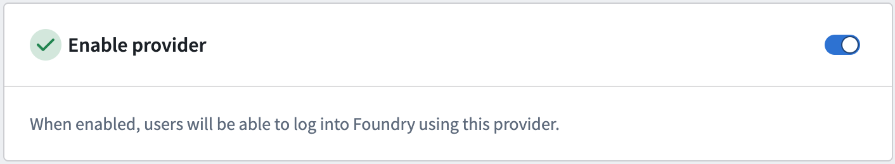
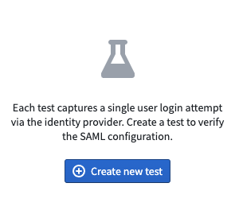
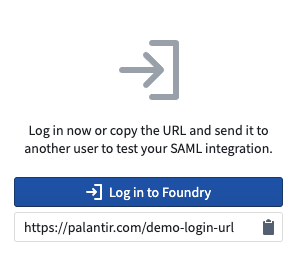
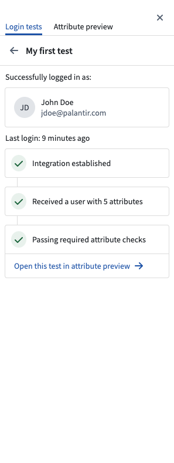
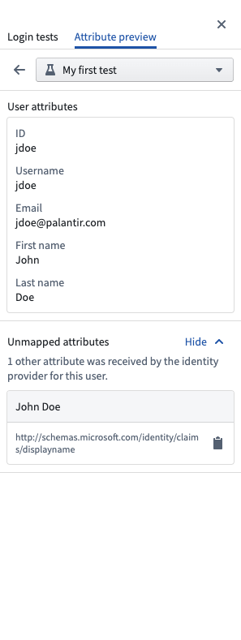

You must enable your SAML or OIDC provider in order to test your integration. If using a Foundry setup link, skip to the next step. Otherwise, go to the Provider Management page and toggle on Enable provider for the desired provider. You can then log in to Foundry using your new integration.

To validate the configuration of your identity provider integration, you can create test logins. If using a Foundry setup link, click Log in to Foundry to automatically create a test login.
Alternatively, navigate to the SAML or OIDC page in-platform and select Test SAML and then Create new test. There are two options for testing:


Once you â or the person you sent the URL to â has logged in, you will be able to see the results of the test. These test results state whether the login was successful and capture a snapshot of the user's attributes received from your provider.
You can preview how these attributes will be mapped in Foundry by opening the test in the Attribute Preview tab. As you make changes to your attribute mapping configuration, the results will be reflected in the panel.


Test results are automatically deleted after one month.